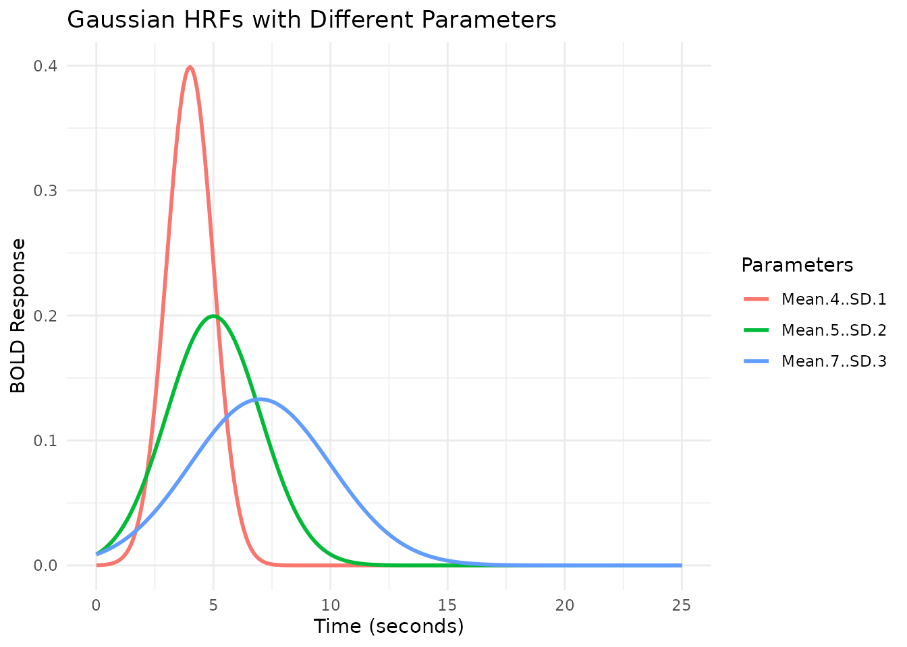

Hemodynamic Response Functions
Bradley R. Buchsbaum
2025-06-07
a_01_hemodynamic_response.RmdIntroduction to Hemodynamic Response Functions (HRFs)
A hemodynamic response function (HRF) models the temporal evolution of the fMRI BOLD (Blood-Oxygen-Level-Dependent) signal in response to a brief neural event. Typically, the BOLD signal peaks 4-6 seconds after the event onset and then returns to baseline, often with a slight undershoot.
fmrihrf provides tools to define, manipulate, and
visualize various HRFs commonly used in fMRI analysis.
Pre-defined HRF Objects
fmrihrf includes several pre-defined HRF objects, which
are essentially functions with specific attributes defining their type,
number of basis functions (nbasis), and effective duration
(span).
Let’s look at two common examples: the SPM canonical HRF
(HRF_SPMG1) and a Gaussian HRF
(HRF_GAUSSIAN).
# SPM canonical HRF (based on difference of two gamma functions)
print(HRF_SPMG1)
#> function (t, P1 = 5, P2 = 15, A1 = 0.0833)
#> {
#> ifelse(t < 0, 0, exp(-t) * (A1 * t^P1 - 1.274527e-13 * t^P2))
#> }
#> <bytecode: 0x55b1abaf4220>
#> <environment: namespace:fmrihrf>
#> attr(,"class")
#> [1] "HRF" "function"
#> attr(,"name")
#> [1] "SPMG1"
#> attr(,"nbasis")
#> [1] 1
#> attr(,"span")
#> [1] 24
#> attr(,"param_names")
#> [1] "P1" "P2" "A1"
#> attr(,"params")
#> attr(,"params")$P1
#> [1] 5
#>
#> attr(,"params")$P2
#> [1] 15
#>
#> attr(,"params")$A1
#> [1] 0.0833
# Gaussian HRF
print(HRF_GAUSSIAN)
#> function (t, mean = 6, sd = 2)
#> {
#> stats::dnorm(t, mean = mean, sd = sd)
#> }
#> <bytecode: 0x55b1abb365b0>
#> <environment: namespace:fmrihrf>
#> attr(,"class")
#> [1] "HRF" "function"
#> attr(,"name")
#> [1] "gaussian"
#> attr(,"nbasis")
#> [1] 1
#> attr(,"span")
#> [1] 24
#> attr(,"param_names")
#> [1] "mean" "sd"
#> attr(,"params")
#> attr(,"params")$mean
#> [1] 6
#>
#> attr(,"params")$sd
#> [1] 2These objects are functions themselves, so you can evaluate them at specific time points:
time_points <- seq(0, 25, by = 0.1)
# Evaluate the HRFs
y_spm <- HRF_SPMG1(time_points)
y_gauss <- HRF_GAUSSIAN(time_points)
# Manually scale each to peak at 1.0 for easier shape comparison
y_spm_scaled <- y_spm / max(y_spm)
y_gauss_scaled <- y_gauss / max(y_gauss)
# Combine into a data frame for plotting
plot_df <- data.frame(
Time = time_points,
SPM_Canonical = y_spm_scaled,
Gaussian = y_gauss_scaled
) %>%
pivot_longer(-Time, names_to = "HRF_Type", values_to = "Response")
# Plot using ggplot2
ggplot(plot_df, aes(x = Time, y = Response, color = HRF_Type)) +
geom_line(linewidth = 1) +
labs(title = "Comparison of SPM Canonical and Gaussian HRFs",
subtitle = "HRFs manually scaled to peak at 1.0 for comparison",
x = "Time (seconds)",
y = "BOLD Response (normalized)",
color = "HRF Type") +
theme_minimal()
Note that the span attribute (e.g., 24 seconds)
indicates the approximate time window over which the HRF is
non-zero.
Modifying HRF Parameters with gen_hrf
The gen_hrf function is a flexible way to create new HRF
functions, often by modifying the parameters of existing ones.
For example, the hrf_gaussian function takes
mean and sd arguments. We can use
gen_hrf to create Gaussian HRFs with different peak times
(mean) and widths (sd).
# Create Gaussian HRFs with different parameters using gen_hrf
# Note: hrf_gaussian is the underlying function, not the HRF object HRF_GAUSSIAN
hrf_gauss_7_3 <- gen_hrf(hrf_gaussian, mean = 7, sd = 3, name = "Gaussian (Mean=7, SD=3)")
hrf_gauss_5_2 <- gen_hrf(hrf_gaussian, mean = 5, sd = 2, name = "Gaussian (Mean=5, SD=2)")
hrf_gauss_4_1 <- gen_hrf(hrf_gaussian, mean = 4, sd = 1, name = "Gaussian (Mean=4, SD=1)")
# Evaluate the new HRFs
vals1 <- hrf_gauss_7_3(time_points)
vals2 <- hrf_gauss_5_2(time_points)
vals3 <- hrf_gauss_4_1(time_points)
# Combine for plotting
plot_df_params <- data.frame(
Time = time_points,
`Mean=7, SD=3` = vals1,
`Mean=5, SD=2` = vals2,
`Mean=4, SD=1` = vals3
) %>%
pivot_longer(-Time, names_to = "Parameters", values_to = "Response")
# Plot
ggplot(plot_df_params, aes(x = Time, y = Response, color = Parameters)) +
geom_line(linewidth = 1) +
labs(title = "Gaussian HRFs with Different Parameters",
x = "Time (seconds)",
y = "BOLD Response",
color = "Parameters") +
theme_minimal()
gen_hrf can also directly incorporate lags and durations
(see later sections).
Modeling Event Duration with block_hrf
fMRI events often have a duration (e.g., a stimulus presented for
several seconds). The block_hrf function (or
gen_hrf with a width argument) modifies an HRF
to model the response to a sustained event of a specific
width (duration). Internally, it convolves the original HRF
with a boxcar function of the specified width.
The precision argument controls the sampling resolution
used for this convolution.
# Create blocked HRFs using the SPM canonical HRF with different durations
hrf_spm_w1 <- block_hrf(HRF_SPMG1, width = 1)
hrf_spm_w2 <- block_hrf(HRF_SPMG1, width = 2)
hrf_spm_w4 <- block_hrf(HRF_SPMG1, width = 4)
# Evaluate
resp_w1 <- hrf_spm_w1(time_points)
resp_w2 <- hrf_spm_w2(time_points)
resp_w4 <- hrf_spm_w4(time_points)
# Combine for plotting
plot_df_blocked <- data.frame(
Time = time_points,
`Width=1s` = resp_w1,
`Width=2s` = resp_w2,
`Width=4s` = resp_w4
) %>%
pivot_longer(-Time, names_to = "Duration", values_to = "Response")
# Plot
ggplot(plot_df_blocked, aes(x = Time, y = Response, color = Duration)) +
geom_line(linewidth = 1) +
labs(title = "SPM Canonical HRF for Different Event Durations",
subtitle = "Using block_hrf()",
x = "Time (seconds)",
y = "BOLD Response",
color = "Duration") +
theme_minimal()
Normalization
By default, longer durations lead to higher peak responses (assuming
summation, see next section). Setting normalize=TRUE in
block_hrf (or gen_hrf) rescales the response
so the peak amplitude is approximately 1, regardless of duration.
# Create normalized blocked HRFs
hrf_spm_w1_norm <- block_hrf(HRF_SPMG1, width = 1, normalize = TRUE)
hrf_spm_w2_norm <- block_hrf(HRF_SPMG1, width = 2, normalize = TRUE)
hrf_spm_w4_norm <- block_hrf(HRF_SPMG1, width = 4, normalize = TRUE)
# Evaluate
resp_w1_norm <- hrf_spm_w1_norm(time_points)
resp_w2_norm <- hrf_spm_w2_norm(time_points)
resp_w4_norm <- hrf_spm_w4_norm(time_points)
# Combine for plotting
plot_df_blocked_norm <- data.frame(
Time = time_points,
`Width=1s` = resp_w1_norm,
`Width=2s` = resp_w2_norm,
`Width=4s` = resp_w4_norm
) %>%
pivot_longer(-Time, names_to = "Duration", values_to = "Response")
# Plot
ggplot(plot_df_blocked_norm, aes(x = Time, y = Response, color = Duration)) +
geom_line(linewidth = 1) +
labs(title = "Normalized SPM Canonical HRF for Different Durations",
subtitle = "Using block_hrf(normalize = TRUE)",
x = "Time (seconds)",
y = "BOLD Response",
color = "Duration") +
theme_minimal() +
ylim(0, NA) # Ensure y-axis starts at 0Modeling Saturation with summate
The summate argument in block_hrf controls
whether the response accumulates over the duration
(summate=TRUE, default) or saturates
(summate=FALSE). Saturation implies that the response
reaches a plateau and doesn’t increase further with longer
stimulation.
# Create non-summating blocked HRFs
hrf_spm_w2_nosum <- block_hrf(HRF_SPMG1, width = 2, summate = FALSE)
hrf_spm_w4_nosum <- block_hrf(HRF_SPMG1, width = 4, summate = FALSE)
hrf_spm_w8_nosum <- block_hrf(HRF_SPMG1, width = 8, summate = FALSE)
# Evaluate
resp_w2_nosum <- hrf_spm_w2_nosum(time_points)
resp_w4_nosum <- hrf_spm_w4_nosum(time_points)
resp_w8_nosum <- hrf_spm_w8_nosum(time_points)
# Combine for plotting
plot_df_blocked_nosum <- data.frame(
Time = time_points,
`Width=2s` = resp_w2_nosum,
`Width=4s` = resp_w4_nosum,
`Width=8s` = resp_w8_nosum
) %>%
pivot_longer(-Time, names_to = "Duration", values_to = "Response")
# Plot
ggplot(plot_df_blocked_nosum, aes(x = Time, y = Response, color = Duration)) +
geom_line(linewidth = 1) +
labs(title = "Non-Summating (Saturating) SPM HRF for Different Durations",
subtitle = "Using block_hrf(summate = FALSE)",
x = "Time (seconds)",
y = "BOLD Response",
color = "Duration") +
theme_minimal()
We can combine summate=FALSE and
normalize=TRUE:
# Create normalized, non-summating blocked HRFs
hrf_spm_w2_nosum_norm <- block_hrf(HRF_SPMG1, width = 2, summate = FALSE, normalize = TRUE)
hrf_spm_w4_nosum_norm <- block_hrf(HRF_SPMG1, width = 4, summate = FALSE, normalize = TRUE)
hrf_spm_w8_nosum_norm <- block_hrf(HRF_SPMG1, width = 8, summate = FALSE, normalize = TRUE)
# Evaluate
resp_w2_nosum_norm <- hrf_spm_w2_nosum_norm(time_points)
resp_w4_nosum_norm <- hrf_spm_w4_nosum_norm(time_points)
resp_w8_nosum_norm <- hrf_spm_w8_nosum_norm(time_points)
# Combine for plotting
plot_df_blocked_nosum_norm <- data.frame(
Time = time_points,
`Width=2s` = resp_w2_nosum_norm,
`Width=4s` = resp_w4_nosum_norm,
`Width=8s` = resp_w8_nosum_norm
) %>%
pivot_longer(-Time, names_to = "Duration", values_to = "Response")
# Plot
ggplot(plot_df_blocked_nosum_norm, aes(x = Time, y = Response, color = Duration)) +
geom_line(linewidth = 1) +
labs(title = "Normalized, Non-Summating SPM HRF for Different Durations",
subtitle = "Using block_hrf(summate = FALSE, normalize = TRUE)",
x = "Time (seconds)",
y = "BOLD Response",
color = "Duration") +
theme_minimal() +
ylim(0, NA)
Modeling Temporal Shifts with lag_hrf
Sometimes, the hemodynamic response might be delayed or advanced
relative to the event onset. The lag_hrf function (or
gen_hrf_lagged) shifts an existing HRF in time by a
specified lag (in seconds). A positive lag delays the
response, while a negative lag advances it.
# Create lagged versions of the Gaussian HRF
hrf_gauss_lag_neg2 <- lag_hrf(HRF_GAUSSIAN, lag = -2)
hrf_gauss_lag_0 <- HRF_GAUSSIAN # Original (lag=0)
hrf_gauss_lag_pos3 <- lag_hrf(HRF_GAUSSIAN, lag = 3)
# Evaluate
resp_lag_neg2 <- hrf_gauss_lag_neg2(time_points)
resp_lag_0 <- hrf_gauss_lag_0(time_points)
resp_lag_pos3 <- hrf_gauss_lag_pos3(time_points)
# Combine for plotting
plot_df_lagged <- data.frame(
Time = time_points,
`Lag=-2s` = resp_lag_neg2,
`Lag= 0s` = resp_lag_0,
`Lag=+3s` = resp_lag_pos3
) %>%
pivot_longer(-Time, names_to = "Lag", values_to = "Response")
# Plot
ggplot(plot_df_lagged, aes(x = Time, y = Response, color = Lag)) +
geom_line(linewidth = 1) +
labs(title = "Gaussian HRF with Different Temporal Lags",
subtitle = "Using lag_hrf()",
x = "Time (seconds)",
y = "BOLD Response",
color = "Lag") +
theme_minimal()Combining Lag and Duration
We can combine lag_hrf and block_hrf using
the pipe operator (%>%) from dplyr (or
magrittr).
# Create HRFs that are both lagged and blocked
hrf_lb_1 <- HRF_GAUSSIAN %>% lag_hrf(1) %>% block_hrf(width = 1, normalize = TRUE)
hrf_lb_3 <- HRF_GAUSSIAN %>% lag_hrf(3) %>% block_hrf(width = 3, normalize = TRUE)
hrf_lb_5 <- HRF_GAUSSIAN %>% lag_hrf(5) %>% block_hrf(width = 5, normalize = TRUE)
# Evaluate
resp_lb_1 <- hrf_lb_1(time_points)
resp_lb_3 <- hrf_lb_3(time_points)
resp_lb_5 <- hrf_lb_5(time_points)
# Combine for plotting
plot_df_lagged_blocked <- data.frame(
Time = time_points,
`Lag=1, Width=1` = resp_lb_1,
`Lag=3, Width=3` = resp_lb_3,
`Lag=5, Width=5` = resp_lb_5
) %>%
pivot_longer(-Time, names_to = "Settings", values_to = "Response")
# Plot
ggplot(plot_df_lagged_blocked, aes(x = Time, y = Response, color = Settings)) +
geom_line(linewidth = 1) +
labs(title = "Gaussian HRFs with Combined Lag and Duration",
subtitle = "Using lag_hrf() %>% block_hrf()",
x = "Time (seconds)",
y = "BOLD Response",
color = "Settings") +
theme_minimal() +
ylim(0, NA)
Alternatively, gen_hrf can apply lag and width
directly:
# Using gen_hrf directly
hrf_lb_gen_3 <- gen_hrf(hrf_gaussian, lag = 3, width = 3, normalize = TRUE)
resp_lb_gen_3 <- hrf_lb_gen_3(time_points)
# Compare (should be very similar to hrf_lb_3 from piped version)
# plot(time_points, resp_lb_3, type = 'l', col = 2, lwd = 2, main = "Piped vs gen_hrf")
# lines(time_points, resp_lb_gen_3, col = 1, lty = 2, lwd = 2)
# legend("topright", legend = c("Piped", "gen_hrf"), col = c(2, 1), lty = c(1, 2), lwd = 2)Multivariate HRFs: Basis Sets
Instead of assuming a fixed HRF shape, we can model the response using a linear combination of multiple basis functions. This allows for more flexibility in capturing variations in HRF shape across brain regions or individuals. The resulting HRF function returns a matrix where each column corresponds to a basis function.
SPM Basis Sets
fmrihrf provides pre-defined HRF objects for the SPM
canonical HRF plus its temporal derivative (HRF_SPMG2), and
additionally its dispersion derivative (HRF_SPMG3).
# SPM + Temporal Derivative (2 basis functions)
print(HRF_SPMG2)
#> function (t)
#> {
#> do.call(cbind, lapply(xs, function(f) f(t)))
#> }
#> <bytecode: 0x55b1a8ba6ec0>
#> <environment: 0x55b1a8b9f8e8>
#> attr(,"class")
#> [1] "SPMG2_HRF" "HRF" "function"
#> attr(,"name")
#> [1] "SPMG2"
#> attr(,"nbasis")
#> [1] 2
#> attr(,"span")
#> [1] 24
#> attr(,"params")
#> list()
resp_spmg2 <- HRF_SPMG2(time_points)
# SPM + Temporal + Dispersion Derivatives (3 basis functions)
print(HRF_SPMG3)
#> function (t)
#> {
#> do.call(cbind, lapply(xs, function(f) f(t)))
#> }
#> <bytecode: 0x55b1a8cdfe18>
#> <environment: 0x55b1a8ccb3f0>
#> attr(,"class")
#> [1] "SPMG3_HRF" "HRF" "function"
#> attr(,"name")
#> [1] "SPMG3"
#> attr(,"nbasis")
#> [1] 3
#> attr(,"span")
#> [1] 24
#> attr(,"params")
#> list()
resp_spmg3 <- HRF_SPMG3(time_points)
# Plot SPMG2
matplot(time_points, resp_spmg2, type = 'l', lty = 1, lwd = 1.5,
xlab = "Time (seconds)", ylab = "BOLD Response",
main = "SPM + Temporal Derivative Basis Set (HRF_SPMG2)")
legend("topright", legend = c("Canonical", "Temporal Deriv."), col = 1:2, lty = 1, lwd = 1.5)
# Plot SPMG3
matplot(time_points, resp_spmg3, type = 'l', lty = 1, lwd = 1.5,
xlab = "Time (seconds)", ylab = "BOLD Response",
main = "SPM + Temporal + Dispersion Derivative Basis Set (HRF_SPMG3)")
legend("topright", legend = c("Canonical", "Temporal Deriv.", "Dispersion Deriv."), col = 1:3, lty = 1, lwd = 1.5)B-Spline Basis Set
The hrf_bspline function generates a B-spline basis set.
We typically use it within gen_hrf to create an HRF object.
Key parameters are N (number of basis functions) and
degree.
# B-spline basis with N=5 basis functions, degree=3 (cubic)
hrf_bs_5_3 <- gen_hrf(hrf_bspline, N = 5, degree = 3, name = "B-spline (N=5, deg=3)")
print(hrf_bs_5_3)
#> function (t)
#> hrf(t, ...)
#> <bytecode: 0x55b1ab3e4e80>
#> <environment: 0x55b1a9a5f368>
#> attr(,"class")
#> [1] "HRF" "function"
#> attr(,"name")
#> [1] "B-spline (N=5, deg=3)"
#> attr(,"nbasis")
#> [1] 5
#> attr(,"span")
#> [1] 24
#> attr(,"params")
#> list()
resp_bs_5_3 <- hrf_bs_5_3(time_points)
matplot(time_points, resp_bs_5_3, type = 'l', lty = 1, lwd = 1.5,
xlab = "Time (seconds)", ylab = "BOLD Response",
main = "B-spline Basis Set (N=5, degree=3)")
# B-spline basis with N=10 basis functions, degree=1 (linear -> tent functions)
hrf_bs_10_1 <- gen_hrf(hrf_bspline, N = 10, degree = 1, name = "Tent Set (N=10)")
print(hrf_bs_10_1)
#> function (t)
#> hrf(t, ...)
#> <bytecode: 0x55b1ab3e4e80>
#> <environment: 0x55b1a9e5d7b8>
#> attr(,"class")
#> [1] "HRF" "function"
#> attr(,"name")
#> [1] "Tent Set (N=10)"
#> attr(,"nbasis")
#> [1] 10
#> attr(,"span")
#> [1] 24
#> attr(,"params")
#> list()
resp_bs_10_1 <- hrf_bs_10_1(time_points)
matplot(time_points, resp_bs_10_1, type = 'l', lty = 1, lwd = 1.5,
xlab = "Time (seconds)", ylab = "BOLD Response",
main = "Tent Function Basis Set (B-spline, N=10, degree=1)")
Sine Basis Set
The hrf_sine function creates a basis set using sine
waves of different frequencies.
hrf_sin_5 <- gen_hrf(hrf_sine, N = 5, name = "Sine Basis (N=5)")
print(hrf_sin_5)
#> function (t)
#> hrf(t, ...)
#> <bytecode: 0x55b1ab3e4e80>
#> <environment: 0x55b1aa4d43a8>
#> attr(,"class")
#> [1] "HRF" "function"
#> attr(,"name")
#> [1] "Sine Basis (N=5)"
#> attr(,"nbasis")
#> [1] 5
#> attr(,"span")
#> [1] 24
#> attr(,"params")
#> list()
resp_sin_5 <- hrf_sin_5(time_points)
matplot(time_points, resp_sin_5, type = 'l', lty = 1, lwd = 1.5,
xlab = "Time (seconds)", ylab = "BOLD Response",
main = "Sine Basis Set (N=5)")Half-Cosine Basis Set (FLOBS-like)
The hrf_half_cosine function implements the basis set
described by Woolrich et al. (2004), often used in FSL’s FLOBS (FMRIB’s
Linear Optimal Basis Sets). It uses four half-cosine functions to model
initial dip, rise, fall/undershoot, and recovery.
# Use default parameters from Woolrich et al. (2004)
# Note: hrf_half_cosine itself returns a single HRF shape, not a basis set directly.
# To use as a basis in modeling, you'd typically include it alongside derivatives
# or other basis functions. Here we just visualize the shape.
resp_half_cos <- hrf_half_cosine(time_points)
plot(time_points, resp_half_cos, type = 'l', lwd = 1.5,
xlab = "Time (seconds)", ylab = "BOLD Response",
main = "Half-Cosine HRF Shape (Woolrich et al., 2004)")
Other HRF Shapes
Gamma HRF
The hrf_gamma function uses the gamma probability
density function.
````
hrf_gam <- gen_hrf(hrf_gamma, shape = 6, rate = 1, name = "Gamma (shape=6, rate=1)")
print(hrf_gam)
#> function (t)
#> hrf(t, ...)
#> <bytecode: 0x55b1ab3e4e80>
#> <environment: 0x55b1ab6c0068>
#> attr(,"class")
#> [1] "HRF" "function"
#> attr(,"name")
#> [1] "Gamma (shape=6, rate=1)"
#> attr(,"nbasis")
#> [1] 1
#> attr(,"span")
#> [1] 24
#> attr(,"params")
#> list()
resp_gam <- hrf_gam(time_points)
plot(time_points, resp_gam, type = 'l', lwd = 1.5,
xlab = "Time (seconds)", ylab = "BOLD Response",
main = "Gamma HRF")
Mexican Hat Wavelet HRF
The hrf_mexhat function uses the Mexican hat wavelet
(second derivative of a Gaussian).
hrf_mh <- gen_hrf(hrf_mexhat, mean = 6, sd = 1.5, name = "Mexican Hat (mean=6, sd=1.5)")
print(hrf_mh)
#> function (t)
#> hrf(t, ...)
#> <bytecode: 0x55b1ab3e4e80>
#> <environment: 0x55b1abc07a68>
#> attr(,"class")
#> [1] "HRF" "function"
#> attr(,"name")
#> [1] "Mexican Hat (mean=6, sd=1.5)"
#> attr(,"nbasis")
#> [1] 1
#> attr(,"span")
#> [1] 24
#> attr(,"params")
#> list()
resp_mh <- hrf_mh(time_points)
plot(time_points, resp_mh, type = 'l', lwd = 1.5,
xlab = "Time (seconds)", ylab = "BOLD Response",
main = "Mexican Hat Wavelet HRF")
Inverse Logit Difference HRF
The hrf_inv_logit function creates an HRF shape by
subtracting two inverse logit (sigmoid) functions, allowing control over
rise and fall times.
hrf_il <- gen_hrf(hrf_inv_logit, mu1 = 5, s1 = 1, mu2 = 15, s2 = 1.5, name = "Inv. Logit Diff.")
print(hrf_il)
#> function (t)
#> hrf(t, ...)
#> <bytecode: 0x55b1ab3e4e80>
#> <environment: 0x55b1a7293680>
#> attr(,"class")
#> [1] "HRF" "function"
#> attr(,"name")
#> [1] "Inv. Logit Diff."
#> attr(,"nbasis")
#> [1] 1
#> attr(,"span")
#> [1] 24
#> attr(,"params")
#> list()
resp_il <- hrf_il(time_points)
plot(time_points, resp_il, type = 'l', lwd = 1.5,
xlab = "Time (seconds)", ylab = "BOLD Response",
main = "Inverse Logit Difference HRF")Creating Custom Basis Sets with gen_hrf_set
The gen_hrf_set function allows you to combine
any set of HRF functions into a single multivariate HRF object
(a basis set).
For example, we can create a basis set from a series of lagged Gaussian HRFs:
# Create a list of lagged Gaussian HRFs
lag_times <- seq(0, 10, by = 2)
list_of_hrfs <- lapply(lag_times, function(lag) {
lag_hrf(HRF_GAUSSIAN, lag = lag)
})
# Combine them into a single HRF basis set object
hrf_custom_set <- do.call(gen_hrf_set, list_of_hrfs)
print(hrf_custom_set) # Note: name is default 'hrf_set', nbasis is 6
#> function (t)
#> {
#> do.call(cbind, lapply(xs, function(f) f(t)))
#> }
#> <bytecode: 0x55b1a8f32d18>
#> <environment: 0x55b1a8f31ee0>
#> attr(,"class")
#> [1] "HRF" "function"
#> attr(,"name")
#> [1] "hrf_set"
#> attr(,"nbasis")
#> [1] 6
#> attr(,"span")
#> [1] 34
#> attr(,"params")
#> list()
# Evaluate and plot
resp_custom_set <- hrf_custom_set(time_points)
matplot(time_points, resp_custom_set, type = 'l', lty = 1, lwd = 1.5,
xlab = "Time (seconds)", ylab = "BOLD Response",
main = "Custom Basis Set (Lagged Gaussians)")Creating Empirical HRFs
From a Single Measured Response
(gen_empirical_hrf)
If you have a measured or estimated hemodynamic response profile
(e.g., from deconvolution), you can turn it into an HRF function using
gen_empirical_hrf. It uses linear interpolation between the
provided points.
# Simulate an average measured response profile
sim_times <- 0:24
set.seed(42) # For reproducibility
sim_profile <- rowMeans(replicate(20, {
h <- HRF_SPMG1 %>% lag_hrf(lag = runif(n = 1, min = -1, max = 1)) %>%
block_hrf(width = runif(n = 1, min = 0, max = 2))
h(sim_times)
}))
# Normalize profile to max = 1 for better visualization
sim_profile_norm <- sim_profile / max(sim_profile)
# Create the empirical HRF function from the normalized profile
emp_hrf <- gen_empirical_hrf(sim_times, sim_profile_norm)
print(emp_hrf)
#> function (v)
#> .approxfun(x, y, v, method, yleft, yright, f, na.rm)
#> <bytecode: 0x55b1ab62afd0>
#> <environment: 0x55b1ab27fea0>
#> attr(,"class")
#> [1] "HRF" "function"
#> attr(,"name")
#> [1] "empirical_hrf"
#> attr(,"nbasis")
#> [1] 1
#> attr(,"span")
#> [1] 24
#> attr(,"params")
#> list()
# Evaluate and plot (using a finer time grid for interpolation)
fine_times <- seq(0, 24, by = 0.1)
resp_emp <- emp_hrf(fine_times)
# Plot the interpolated curve with the original points
plot(fine_times, resp_emp, type = 'l', lwd = 1.5,
xlab = "Time (seconds)", ylab = "BOLD Response",
main = "Empirical HRF from Simulated Average Profile")
points(sim_times, sim_profile_norm, pch = 16, col = "red", cex = 1) # Show original points
Empirical Basis Set via PCA
You can create an empirical basis set by applying dimensionality reduction (like PCA) to a collection of observed or simulated HRFs.
# 1. Simulate a matrix of diverse HRFs
set.seed(123) # for reproducibility
n_sim <- 50
sim_mat <- replicate(n_sim, {
hrf_func <- HRF_SPMG1 %>%
lag_hrf(lag = runif(1, -2, 2)) %>%
block_hrf(width = runif(1, 0, 3))
hrf_func(sim_times)
})
# Show a sample of simulated HRFs to illustrate variability
matplot(sim_times, sim_mat[, 1:10], type = 'l', col = scales::alpha("gray", 0.7), lty = 1,
xlab = "Time (seconds)", ylab = "Response",
main = "Sample of Simulated HRF Profiles")
# 2. Perform PCA on the transpose (each column = one HRF, each row = one time point)
pca_res <- prcomp(t(sim_mat), center = TRUE, scale. = FALSE)
n_components <- 3
# Print variance explained by top components
variance_explained <- summary(pca_res)$importance[2, 1:n_components]
cat("Variance explained by top", n_components, "components:",
paste0(round(variance_explained * 100, 1), "%"), "\n")
#> Variance explained by top 3 components: 67.1% 29.9% 2.7%
# Extract the top principal components
pc_vectors <- pca_res$rotation[, 1:n_components]
# 3. Convert principal components into HRF functions
# Create list to store our empirical HRF functions
list_pc_hrfs <- list()
for (i in 1:n_components) {
# Get the PC vector
pc_vec <- pc_vectors[, i]
# Start at 0 (shift so first value is 0)
pc_vec_zeroed <- pc_vec - pc_vec[1]
# Normalize peak to 1 (or -1 if the peak is negative)
max_abs <- max(abs(pc_vec_zeroed))
pc_vec_norm <- pc_vec_zeroed / max_abs
# Create empirical HRF function
list_pc_hrfs[[i]] <- gen_empirical_hrf(sim_times, pc_vec_norm)
}
# 4. Combine PC HRFs into a basis set using gen_hrf_set
emp_pca_basis <- do.call(gen_hrf_set, list_pc_hrfs)
print(emp_pca_basis)
#> function (t)
#> {
#> do.call(cbind, lapply(xs, function(f) f(t)))
#> }
#> <bytecode: 0x55b1a8f32d18>
#> <environment: 0x55b1abb544d0>
#> attr(,"class")
#> [1] "HRF" "function"
#> attr(,"name")
#> [1] "hrf_set"
#> attr(,"nbasis")
#> [1] 3
#> attr(,"span")
#> [1] 24
#> attr(,"params")
#> list()
# 5. Evaluate and plot the basis functions
resp_pca_basis <- emp_pca_basis(sim_times)
# Create a prettier plot of the PCA basis functions
pc_df <- as.data.frame(resp_pca_basis)
names(pc_df) <- paste("PC", 1:n_components)
pc_df$Time <- sim_times
# Use ggplot for a nicer visualization
pc_df_long <- pivot_longer(pc_df, -Time, names_to = "Component", values_to = "Value")
ggplot(pc_df_long, aes(x = Time, y = Value, color = Component)) +
geom_line(linewidth = 1.2) +
scale_color_brewer(palette = "Set1") +
labs(title = "Empirical Basis Set from PCA",
subtitle = paste0("First ", n_components, " Principal Components"),
x = "Time (seconds)",
y = "Component Value") +
theme_minimal() +
theme(legend.position = "right")
This empirical basis set can then be used in regression models just like any other pre-defined or custom basis set.